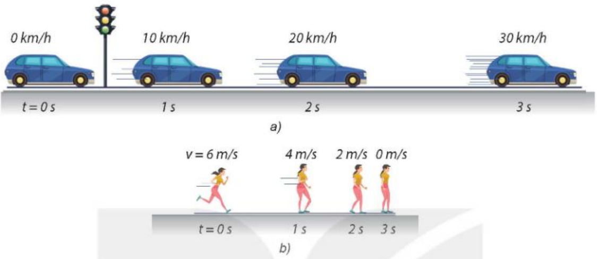
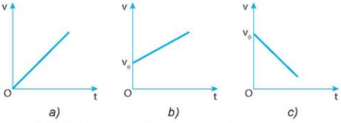
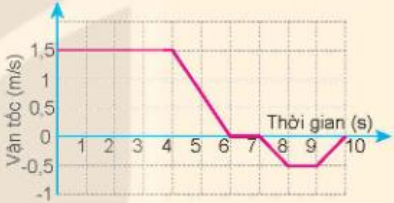
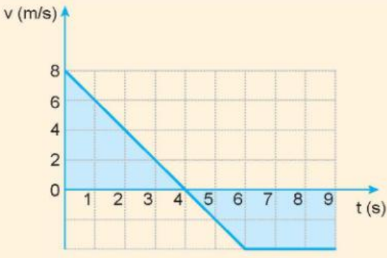
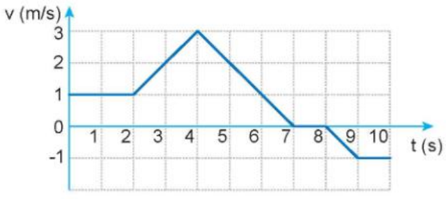

Câu 1: Chuyển động thẳng biến đổi đều là chuyển động thẳng mà:
Câu 2: Trong chuyển động thẳng biến đổi đều, gia tốc:
Câu 3: Công thức tính vận tốc tức thời của chuyển động thẳng biến đổi đều là:
Câu 4: Đồ thị vận tốc - thời gian của chuyển động thẳng biến đổi đều có dạng:
Câu 5: Công thức tính độ dịch chuyển của chuyển động thẳng biến đổi đều là:
Câu 6: Hệ thức liên hệ giữa vận tốc, gia tốc và độ dịch chuyển là:
Câu 7: Chuyển động thẳng nhanh dần đều có:
Câu 8: Hình ảnh dưới đây mô tả sự thay đổi vị trí và vận tốc của ô tô, người sau những khoảng thời gian bằng nhau. Phát biểu nào sau đây đúng?

Câu 9: (Sử dụng hình 9.1) Đồ thị nào biểu diễn chuyển động thẳng nhanh dần đều có vận tốc ban đầu bằng 0?

Câu 10: (Sử dụng hình 9.1) Đồ thị nào biểu diễn chuyển động thẳng chậm dần đều?
Câu 11: (Sử dụng hình 9.2) Đồ thị vận tốc - thời gian của một bạn đi trong siêu thị. Trong khoảng thời gian từ 0 đến 4 s, bạn đó chuyển động:

Câu 12: (Sử dụng hình 9.2) Từ giây thứ 4 đến giây thứ 6, bạn đó chuyển động:
Câu 13: (Sử dụng hình 9.4) Đồ thị vận tốc - thời gian của một vật chuyển động. Gia tốc của vật trong 4 giây đầu là:

Câu 14: (Sử dụng hình 9.4) Độ dịch chuyển của vật trong 4 giây đầu là:
Câu 15: (Sử dụng hình 9.5) Đồ thị vận tốc - thời gian của một chú chó. Trong khoảng thời gian từ 0 đến 2 s, chú chó chuyển động:

Câu 16: (Sử dụng hình 9.5) Từ giây thứ 2 đến giây thứ 4, chú chó chuyển động:
Câu 1: Cho đồ thị vận tốc - thời gian ở Hình 9.4. Xét tính đúng/sai của các phát biểu sau:
Câu 2: Một vận động viên đua xe đạp đường dài vượt qua vạch đích với tốc độ 10 m/s. Sau đó vận động viên này đi chậm dần đều thêm 20 m mới dừng lại. Xét tính đúng/sai của các phát biểu sau:
Câu 1: Một vật chuyển động thẳng chậm dần đều với vận tốc ban đầu 5 m/s và gia tốc có độ lớn 2 m/s². Tính quãng đường vật đi được cho đến khi dừng lại (đơn vị: m).
Đáp án: ....................
Câu 2: Một vật bắt đầu chuyển động thẳng nhanh dần đều với gia tốc 2 m/s². Tính quãng đường vật đi được sau 3 s (đơn vị: m).
Đáp án: ....................